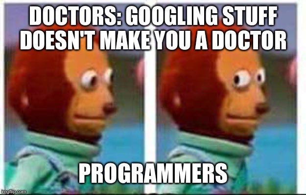

Exercise Using the tidyverse
Maximilian H.K. Hesselbarth
2022-03-25

First, make sure you downloaded the tidyverse and are
able to load it. Furthermore, you need to install the
palmerpenguins package to access the data sets. Load both
packages and check if you have any NAMESPACE conflicts.
# Insert code here
# EndMy conflicts are stats::filter() and
stats::lag(), which should not be an issue.
Have a look at the class and structure of the
penguins_raw data set. Also, make yourself familiar with
the columns. Since the data set is part of a package, you can also use
the corresponding help page (? or F1).
# Insert code here
# EndNext, for easier data handling, clean the column names by removing all special characters (e.g., brackets, units, …) and replacing all white spaces with an underscore. Last, makle sure all column names are either all lower case or all upper case
# Insert code here
# EndNow, remove all rows that don’t have a measure for stable isotopes
(both Delta 15 N or Delta 13 C). Save this into a new
tibble.
# Insert code here
# EndFilter the data set to include only the 50% smallest individuals in
terms of body mass. Select the individual id, species, the culmen
dimensions, and the sex columns. Save this into a new
tibble called penguins_small (or something
similar).
# Insert code here
# EndCreate a new column (culmen_class) in which each male
individual with a culmen length larger than 50 mm is identified by
1, each female individual with a culmen length larger than
45 mm is identified by 2, and all other individuals are
identified by 0.
# Insert code here
# EndCalculate the relative number (%) of individuals within each group
and the ratio between the minimum culmen length and depth as well as
between the maximum culmen length and depth. Add a sex_new
column again (culmen_class 1 = "male",
culmen_class 2 = "female",
culmen_class 0 = "mixed). Save the result as
penguings_sum.
# Insert code here
# EndNow, combine penguins and penguins_sum to
one tibble using sex and sex_new
as ID columns.
# Insert code here
# EndReshape the penguins_small tibble from wide
to long in a way that the culmen length and depth columns are tidy. The
name of the new column specifying the information should be
fun, the new column containing the values should be
measurements. Save the results as
penguins_small_long tibble.
# Insert code here
# EndUse the map function to fit a linear model
(flipper_length_mm ~ body_mass_g) to the penguins data set,
but seperated by species. Extract the R squared and p value and save the
results in a data.frame that additionally includes the
species. (Tip: Have a look at broom::glance, however, there
are many ways to achieve this).
# Insert code here
# End